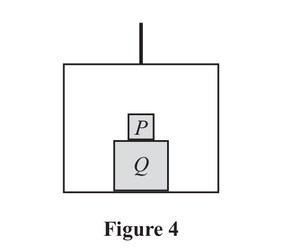
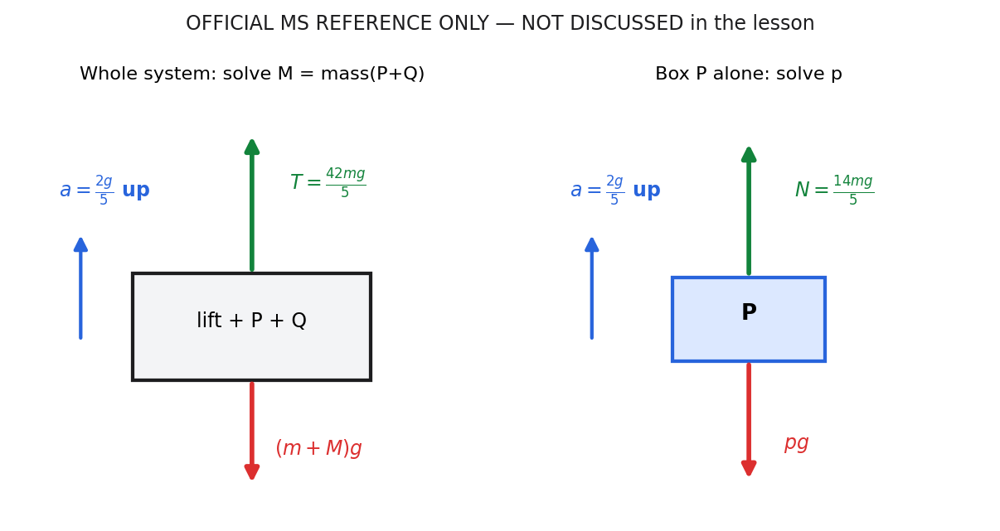
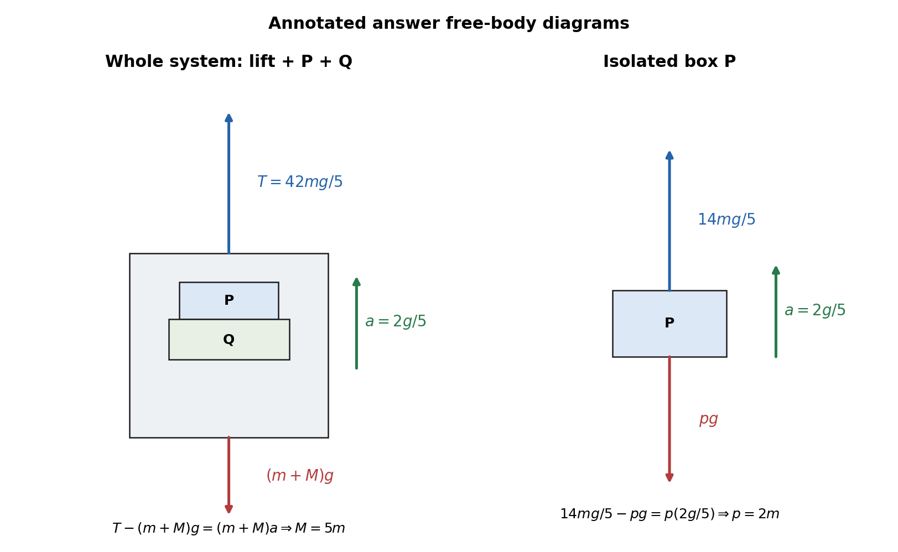

From the official paper. A simple lift operates by means of a vertical cable which is attached to the top of the lift. The lift has mass \(m\)
A box Q is placed on the floor of the lift.
A box P is placed directly on top of box Q, as shown in Figure 4.

The cable is modelled as being light and inextensible and air resistance is modelled as being negligible.
The tension in the cable is \(\dfrac{42mg}{5}\)
The lift and its contents move vertically upwards with acceleration \(\dfrac{2g}{5}\)
Using the model, (a) find, in terms of \(m\), the combined mass of boxes P and Q (4)
During the motion of the lift, the force exerted on box P by box Q is \(\dfrac{14mg}{5}\)
Using the model, (b) find, in terms of \(m\), the mass of box P (3)
(Total for Question 7 is 7 marks)
Not covered in the lesson — official-reference reconstruction below.
Teaching visual — official-reference system choice.

Sense check, exam trigger and stopping point: verify that the lift and each box share the stated acceleration direction; when you see connected lift bodies, draw separate force diagrams. This item was not covered in the lesson, so no further lesson-derived solution is shown.
Strategy, status and formula first. Packet Q7 / official Q7 was not covered in the lesson, so this is and must not be described as live Student working. Let \(M=p+q\) be the combined mass of boxes P and Q. Treat the lift and both boxes as one system: internal contact forces cancel, leaving cable tension upward and total weight downward. Newton’s second law is \(\sum F=Ma\); choose upward positive because the stated acceleration is upward.
Authorised working. The whole moving system has mass \(m+M\), cable tension \(42mg/5\), acceleration \(2g/5\), and weight \((m+M)g\). Therefore \(\dfrac{42mg}{5}-(m+M)g=(m+M)\dfrac{2g}{5}\). Divide by \(g\), then multiply by five: \(42m-5(m+M)=2(m+M)\). Hence \(42m=7(m+M)\), so \(m+M=6m\) and \(M=5m\). The requested quantity is only the boxes’ combined mass, not the lift-plus-boxes total. The exact official answer, and no claimed lesson answer, is \(p+q=5m\).
Choose the lift plus both boxes as one system. Newton’s second law in the upward direction is \(T-(m+M)g=(m+M)a\), where \(M\) is the combined box mass. Substituting \(T=42mg/5\) and \(a=2g/5\) gives \(42m-5(m+M)=2(m+M)\), so \(M=5m\). Internal contact forces are omitted because both members of each pair lie inside the chosen system. The distinction between \(M\) and total mass \(m+M\) is the difficult transition. Diagnostic trap: using only \(M\) on the right would keep the cable force on the whole assembly while omitting the lift’s inertia. This is official-reference working because Q7 was not covered in the lesson. Transfer cue: circle the system boundary first, then include every external force and every enclosed mass exactly once.
The combined mass of P and Q is therefore \(5m\). A numerical force check uses total moving mass \(6m\): tension is \(8.4mg\), total weight is \(6mg\), and the upward resultant is \(2.4mg\). The right side is \((6m)(2g/5)=2.4mg\), so direction and magnitude agree. The requested answer excludes the lift mass; giving \(6m\) would answer for the whole moving system instead of the boxes. Setting forces equal would also be wrong because the source states nonzero upward acceleration. The status remains . For another lift problem, compare the noun phrase in the command with the mass used in \(Ma\): system choice may be broad for the equation but the reported quantity can be narrower.
Strategy and definition first. This part also remains because Q7 was not covered in the lesson. Isolate box P, the upper box, since the source gives the force exerted on P by Q. For P alone, the contact force \(14mg/5\) acts upward and weight \(pg\) acts downward. With upward positive and acceleration \(2g/5\), Newton’s second law is “upward contact minus weight equals mass times upward acceleration.” This force-direction statement must precede substitution.
Complete authorised working. Write \(\dfrac{14mg}{5}-pg=p\left(\dfrac{2g}{5}\right)\). Divide by \(g\) and multiply by five: \(14m-5p=2p\). Therefore \(14m=7p\), giving \(p=2m\). The carry-in \(p+q=5m\) is compatible and would imply \(q=3m\), but Q7(b) asks only for P, so \(q\) is a check rather than an additional requested answer. The official scheme authorises \(2m\); no live derivation occurred.
For part (b), isolate P because the source gives the force on P by Q. With upward positive, the contact \(14mg/5\) acts upward, weight \(pg\) downward, and acceleration is \(2g/5\). State Newton’s second law before substitution: upward force minus downward force equals \(pa\). Thus \(14mg/5-pg=p(2g/5)\), leading to \(14m-5p=2p\) and \(p=2m\). The carry-in \(p+q=5m\) is only a compatibility check, not the method. The wording ‘on P by Q’ fixes the contact direction and prevents applying the cable tension directly to P. Transfer recognition: isolate the body named after ‘force exerted on’, then place only that body’s forces and inertia in the equation.
Check-back. If \(p=2m\), P’s weight is \(2mg\), the upward contact is \(2.8mg\), and the resultant is \(0.8mg\). Meanwhile \(pa=(2m)(2g/5)=0.8mg\), so magnitude, sign and dimensions agree. Also \(p=2m<5m=p+q\), as an individual box must be lighter than the positive combined mass.
Check with \(p=2m\): contact is \(2.8mg\), weight is \(2mg\), and resultant is \(0.8mg=(2m)(0.4g)\). Also \(q=5m-2m=3m>0\), so the individual masses are compatible with part (a). The official-reference answer is mass of P \(=2m\); no lesson discussion is invented. Reversing the contact arrow confuses the force on P with the equal-and-opposite force on Q, while using \(5m\) on the right changes system midway. Transfer cue: translate ‘force exerted on A by B’ into a free-body diagram of A before writing any equation.
Annotated answer diagram.
